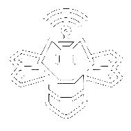
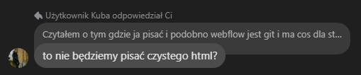

Gdzie ilość staje się jakością
Witamy w SWARM — kole naukowym, w którym pasja do technologii spotyka się z siłą pracy zespołowej. Inspiruje nas inteligencja roju: wierzymy, że współdziałanie jednostek pozwala rozwiązywać problemy, które dla pojedynczego człowieka są nieosiągalne.
Systemy wielu robotów działające jako jeden organizm
Algorytmy inspirowane naturą: mrówki, pszczoły, ptaki
Projektowanie i budowa miniaturowych robotów rojowych
Konferencje naukowe i prezentacje badań
Nasz pierwszy robot rojowy SAIR v1 jest w trakcie projektowania. Równolegle przygotowujemy prezentacje na LEM Conference we Wrocławiu — pierwsze publiczne wystąpienie KN SWARM.
Pierwszy robot rojowy — w trakcie projektowania modelu
Prezentacje na temat przyszłości robotyki roju, Wrocław
Jesteśmy młodym, ambitnym kołem naukowym gotowym do współpracy z firmami technologicznymi. Oferujemy widoczność marki, kontakt z utalentowanymi studentami i wspólne projekty badawcze.
Współtwórca strony
Współtwórca strony
